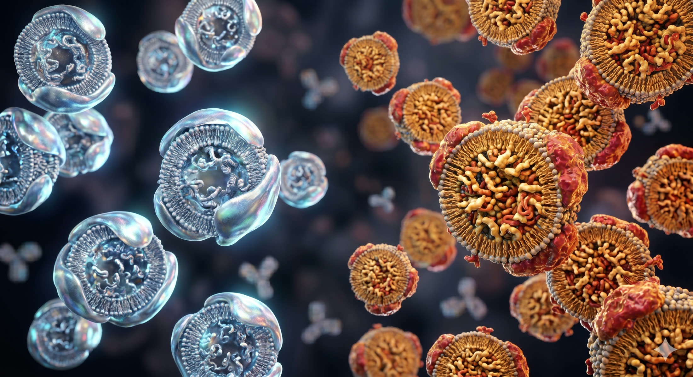
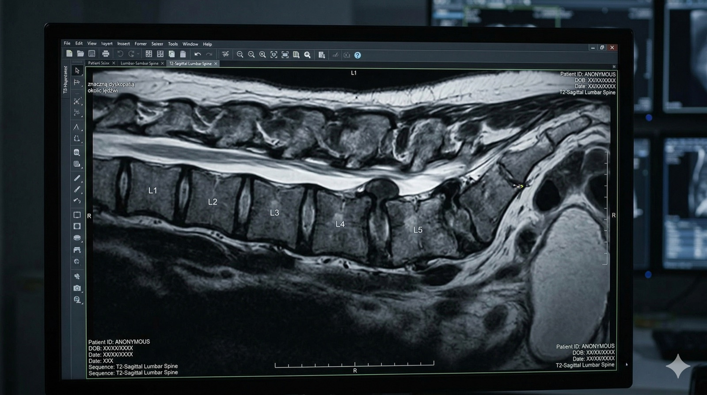

Jeśli masz ponad 50 lat i boli Cię kolano — prawdopodobnie słyszałeś od kogoś: "przestań biegać, niszczysz sobie stawy." A może sam sobie to mówisz. Otóż nauka ma w tej sprawie zupełnie inne zdanie. I to zdanie może Cię zaskoczyć.
Szybka odpowiedź
Bieganie po 50-tce nie niszczy kolan samo z siebie, jeśli objętość rośnie stopniowo, np. o 5-10% tygodniowo. Gdy pojawia się ból utrzymujący się ponad 48 godzin, zmniejsz intensywność i sprawdź technikę oraz siłę pośladków. U osób z nadwagą bezpieczniej zacząć od marszobiegów 2-3 razy tygodniowo.
Kluczowe wnioski
Kluczowe wnioski
- Najważniejsze: Jeśli masz ponad 50 lat i boli Cię kolano — prawdopodobnie słyszałeś od kogoś: "przestań biegać, niszczysz sobie stawy." A może sam sobie to mówisz.
- W artykule znajdziesz konkrety o: Mit, który żyje od dekad — i który nauka właśnie obaliła.
- Drugi kluczowy temat: Liczby, które mówią same za siebie.
Mit, który żyje od dekad — i który nauka właśnie obaliła?
Przez lata bieganie kojarzyło się z "zużywaniem" stawów. Logika wydawała się prosta: kolano to mechanizm, każdy mechanizm się zużywa, a bieganie przyspiesza to zużycie. To intuicyjne. To też nieprawda. Po 50-tce warto wdrażać te zasady spokojnie i regularnie, obserwując reakcję organizmu oraz łącząc je z codziennym ruchem i regeneracją.
W ciągu ostatnich kilkunastu lat przeprowadzono dziesiątki dużych badań naukowych — setki tysięcy uczestników, wieloletnie obserwacje, zdjęcia rentgenowskie, rezonanse magnetyczne. I wyniki były zaskakujące dla wszystkich, którzy wierzyli w teorię "zużywania kolan".
Warto przeczytać też: trening siłowy, dieta po 50-tce, sen i regeneracja, badania krwi.
Powiązane tematy: trening siłowy, dieta po 50-tce, sen i regeneracja, suplementacja.
Liczby, które mówią same za siebie?
W tej części warto zebrać najważniejsze liczby i zobaczyć, co naprawdę wynika z badań. Taki porządek pomaga szybko oddzielić intuicję od danych i lepiej ocenić, czy obawy o bieganie mają dziś jeszcze naukowe podstawy. To także ułatwia spokojniejsze decyzje treningowe.
Ludzie, którzy nie biegają, mają WYŻSZE ryzyko bólu kolan i choroby zwyrodnieniowej niż rekreacyjni biegacze. Siedzący tryb życia — niebieganie — jest problemem.
| Grupa | Ryzyko artrozy kolana / biodra | Co to oznacza |
|---|---|---|
| Rekreacyjni biegacze | 3,5% | Najniższe ryzyko ze wszystkich grup |
| Osoby niećwiczące | 10,2% | Prawie 3x wyższe niż u biegaczy |
| Wyczynowi sportowcy | 13,3% | Najwyższe ryzyko — intensywność ma znaczenie |
Widzisz ten wzorzec? Ryzyko nie rośnie liniowo wraz z bieganiem — wyraźniej zmienia się dopiero przy wyczynowym poziomie intensywności. Rekreacyjny bieg, 3-4 razy w tygodniu, w rozsądnym tempie, u wielu osób nie wygląda na strefę zagrożenia.
Dlaczego bieganie może chronić kolana?
To co dzieje się w kolanie podczas biegu jest bardziej skomplikowane niż "ścieranie chrząstki". Chrząstka stawowa nie ma własnego ukrwienia — odżywia się przez płyn stawowy, który jest wpompowywany do chrząstki właśnie podczas ruchu i obciążenia.
Innymi słowy: kolano potrzebuje ruchu, żeby się odżywiać. Bezruch to nie oszczędzanie — to głodzenie.
Regularny ruch stymuluje produkcję płynu stawowego, wzmacnia mięśnie wokół kolana (które odciążają staw), poprawia propriocepcję — czyli czucie głębokie, dzięki któremu kolano "wie" jak się ustawić przy każdym kroku.
A co jeśli kolano JUŻ boli? Szczera odpowiedź?
W tym miejscu najlepiej zatrzymać się na chwilę i spojrzeć na sedno problemu bez pośpiechu. Taki porządek ułatwia zrozumienie, co jest naprawdę ważne, a co tylko brzmi efektownie, lecz niewiele wnosi do codziennej praktyki po pięćdziesiątce.
Tu musimy być uczciwi — bo to jest pytanie, które zadaje sobie wiele osób po 50-tce. I odpowiedź jest bardziej złożona niż "biegaj, będzie dobrze". Ważne jest, aby rozróżnić rodzaje bólu.
Rodzaje bólu kolana — nie każdy jest taki sam
- Ból mięśniowy wokół kolana (uda, łydka) po długim biegu lub po przerwie — normalny, przemija w 24-48 godzin. Możesz biegać.
- Ból pod rzepką lub po jej bokach (runner's knee) — często wynika ze złej techniki lub zbyt szybkich postępów. Warto wtedy zwolnić i sprawdzić, czy nie popełniasz typowych błędów treningowych.
- Ból wewnątrz stawu, obrzęk, trzaskanie — to sygnał do konsultacji z ortopedą. Nie biegaj bez diagnozy.
- Ból zwyrodnieniowy — tu nauka mówi wyraźnie: umiarkowany ruch jest lepszy niż bezruch, ale program powinieneś ustalić ze specjalistą.
Co naprawdę niszczy kolana?
W tym fragmencie skupmy się na konkretach i zobaczmy, co naprawdę obciąża stawy po 50-tce. Dzięki temu łatwiej odróżnisz sam ruch od czynników, które faktycznie zwiększają ryzyko bólu, przeciążenia i szybszego zużywania się kolan.
Skoro bieganie nie jest głównym winowajcą, to co nim jest? Badania wskazują na kilka kluczowych czynników:
- Nadwaga i otyłość — każdy dodatkowy kilogram to potężne obciążenie przy każdym kroku. To największy wróg Twoich stawów.
- Siedzący tryb życia — słabe mięśnie nie stabilizują kolana, co prowadzi do nierównomiernego obciążenia chrząstki.
- Wcześniejsze urazy — dawne kontuzje zwiększają ryzyko zmian niezależnie od aktywności.
- Brak adaptacji — rzucanie się na głęboką wodę (np. 50km tygodniowo bez bazy) to prosta droga do problemów.
Jak biegać po 50-tce żeby kolana były wdzięczne?
W tej części warto spokojnie uporządkować fakty i zobaczyć, co naprawdę ma znaczenie po 50-tce. Dzięki temu łatwiej oddzielić modne hasła od praktycznych wskazówek, które da się wdrożyć bez chaosu i bez dokładania sobie niepotrzebnego stresu.
Bieganie po 50-tce to nie bieganie w wersji dla początkujących. To bieganie z głową — z szacunkiem dla tego, czego ciało potrzebuje.
- Zacznij wolno — 20-25 minut truchtu, 3 razy w tygodniu. Daj tkankom czas na adaptację.
- Technika lądowania — ląduj pod biodrem, środkową częścią stopy. Skrócony krok zmniejsza siłę uderzenia o podłoże.
- Wzmocnij mięśnie — siłownia po 50-tce (przysiady, wykroki) to najlepsza polisa ubezpieczeniowa dla Twoich kolan.
- Zadbaj o regenerację — dobrej jakości sen po 50-tce to moment, kiedy Twoje stawy faktycznie się naprawiają.
- Dieta to fundament — odpowiednia dieta po 50-tce wspiera walkę ze stanami zapalnymi.
Na koniec?
Na koniec warto zebrać w jednym miejscu najważniejsze wnioski i przełożyć je na spokojną decyzję treningową. Właśnie wtedy najlepiej widać, że rozsądnie dawkowany bieg może wspierać kolana zamiast je bezmyślnie niszczyć, zwłaszcza gdy rośnie stopniowo razem z Twoją siłą.
Ciekawostka: w badaniu na 3804 maratończykach (średnio każdy ukończył prawie 10 maratonów!) nie znaleziono związku między liczbą przebiegniętych kilometrów a ryzykiem artrozy. Winowajcami były geny, waga i stare kontuzje, a nie pasja do biegania.
Zacznij. Powoli. Mądrze. Z szacunkiem dla ciała — i z zaufaniem do tego, do czego ciało jest stworzone. Kolana zwykle lepiej reagują na rozsądnie dawkowany ruch niż na bezruch.
Źródła
- [1] Dhillon, J. et al. (2023). Effects of Running on the Development of Knee Osteoarthritis: An Updated Systematic Review at Short-Term Follow-up.
- [2] Alentorn-Geli, E. et al. (2017). The Association of Recreational and Competitive Running With Hip and Knee Osteoarthritis: A Systematic Review and Meta-analysis. JOSPT, 47(6), 373-390.
- [3] Voinier, D., White, D.K. (2024). Walking, Running, and Recreational Sports for Knee Osteoarthritis: An Overview of the Evidence. European Journal of Rheumatology.
- [4] Hartwell, M.J. et al. (2024). Does Running Increase the Risk of Hip and Knee Arthritis? A Survey of 3804 Marathon Runners.
- [5] Lo, G.H. et al. (2017). History of Running Is Not Associated with Higher Risk of Symptomatic Knee Osteoarthritis: A Cross-Sectional Study from the Osteoarthritis Initiative.
- [6] Shmerling, R.H. (2026). Does running cause arthritis? Harvard Health Publishing.
Najczęściej zadawane pytania?
Czy bieganie po 50 niszczy kolana?
U większości osób nie. Przy rozsądnym obciążeniu, technice i regeneracji bieganie częściej poprawia sprawność stawów niż ją pogarsza.
Jak zacząć biegać po 50, żeby nie przeciążyć kolan?
Najlepiej od marszobiegu 2-3 razy w tygodniu, z progresją objętości nie większą niż około 10% tygodniowo. Dobrze działa też równoległy trening siłowy nóg i pośladków.
Kiedy ból kolana po bieganiu to sygnał, żeby iść do specjalisty?
Gdy ból utrzymuje się kilka dni, narasta, pojawia się obrzęk lub niestabilność stawu. Wtedy warto zrobić diagnostykę zamiast dalej zwiększać obciążenie.
Jak wdrożyć to po 50-tce krok po kroku?
Zacznij spokojnie: wybierz jeden mały krok na ten tydzień, obserwuj reakcję organizmu i dopiero potem dokładaj kolejne elementy. Najlepsze efekty daje regularność, a nie tempo.
Duża garść wiedzy podana prosto, konkretnie i po ludzku.

ApoB i ApoA: dwa badania, które mówią więcej o twoim sercu niż standardowy cholesterol
Sprawdź, dlaczego ApoB i ApoA po 50-tce lepiej oceniają ryzyko sercowo-naczyniowe niż sam lipidogram i kiedy warto wykonać te badania.
Czytaj artykuł ->
Badania przed treningiem po 50-tce. Co naprawdę musisz sprawdzić?
Jakie badania przed treningiem po 50-tce naprawdę warto zrobić, a czego nie musisz? Sprawdź konkretną listę badań i sygnały alarmowe dla aktywnych 50+.
Czytaj artykuł ->
Rezonans cię nastraszył? Nauka mówi coś innego
Rezonans wykazał dyskopatię i przepuklinę? Zobacz, co mówi współczesna nauka o ćwiczeniach, odżywianiu krążka i leczeniu bólu kręgosłupa po 50-tce.
Czytaj artykuł ->